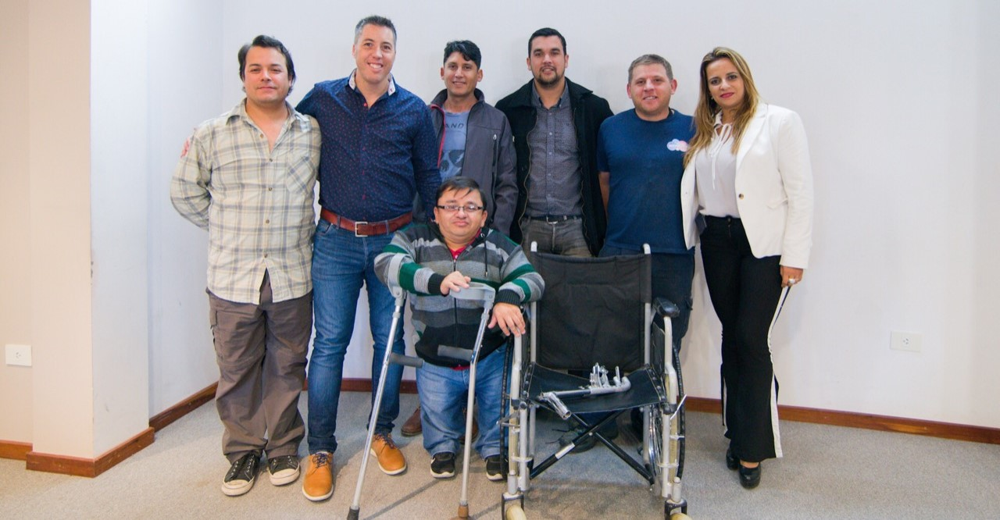

<div class="container contenido-principal d-flex flex-column">
    <div class="d-flex flex-column justify-content-center align-items-center">
        <section class="contenedor-servicios mb-5 w-75">
            <h1 class='texto-resaltado text-center mb-5'>HOGAR</h1>
            <p class="lead">El Servicio de Hogar data de 2004, funciona las 24 hs del día los 365 días del año, en una
                casa alquilada, alojamos a adultos con distintas discapacidades, que requieren de una atención especial
                y que por diversas circunstancias no pueden vivir con su familia.</p>
            <p class="lead">   Ser un hogar para pocos residentes, nos permite ofrecer una atención personalizada, proporcionando a
                cada uno de nuestros jóvenes la posibilidad de mantenerse activos y estimulados, mediante el seguimiento
                de metas pedagógicas y terapéuticas destinadas a potenciar las capacidades de cada uno, su singularidad
                y autodeterminación.</p>
            <p class="lead">    Nuestra modalidad es de puertas abiertas. Esto permite que los padres o responsables visiten a sus seres
                queridos en cualquier momento del día, lo que contribuye a favorecer el vínculo familiar.</p>
            
        </section>
    </div>
</div>